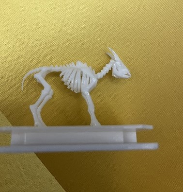
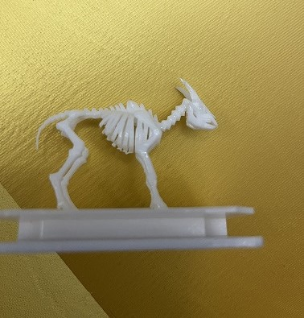

Galería de la Segunda Temporada (Tocar)
Galería de la Segunda Temporada (Tocar)
🦎 Podarcis lilfordi — El lagarto balear
Reptil lacértido endémico de Mallorca y Menorca. Símbolo de resiliencia y tenacidad.
Colección visual


EAMV collection rescata especies y símbolos de Baleares en ediciones limitadas, bajo el principio TECHNESANO: tecnología con alma sana.
Símbolos de prestigio, culto y lujo consciente.
Son recuerdos encarnados en presencia,
y cada figura refleja una o más virtudes.
No te llevas un souvenir, te llevas una virtud.
🗺️ Cada
(del griego éndemos “de la tierra” + latín moria “memoria”)
Recuerdo de origen.
El nombre que damos a nuestras piezas: obras que nacen de un lugar, su fauna y su historia. Porque cada creación de EAMV Collection nace con propósito.Las Endemorias representan fauna endémica de un territorio.
Especies que revelan distintas virtudes: la capacidad de adaptarse, resistir o dejar memoria de lo que fue. A través de ellas, reflexionamos también sobre nuestra propia forma de habitar el mundo.
Nuestra visión mira al futuro:
Promover la educación, la cultura y la preservación de la fauna balear,
como símbolo de respeto y evolución.
No compras un producto.
Dejas una huella.
Haz click en la temporada para ver las ediciones visuales, o en el botón para leer la historia completa.
Galería de la Segunda Temporada (Tocar)
Reptil lacértido endémico de Mallorca y Menorca. Símbolo de resiliencia y tenacidad.
 Galería de la Primera Temporada (tocar)
Galería de la Primera Temporada (tocar)
Bóvido endémico de Mallorca y Menorca. Símbolo de memoria y respeto.


· EAMV collection trae de vuelta a una superestrella de la naturaleza: un pequeño superviviente que venció al tiempo y al olvido.
· Pequeño, ágil y luminoso, Podarcis lilfordi guarda en su mirada la esencia de las Baleares. Durante siglos habitó todas las islas, hasta que el ser humano y los depredadores lo empujaron a los islotes donde hoy resiste, adaptando su color al viento y al mar.
· Es verde, azul o dorado, según el lugar que lo abrace. Símbolo de vida y resistencia, esta lagartija recuerda que incluso lo más frágil puede perdurar cuando pertenece verdaderamente a su tierra.
 

· El Myotragus balearicus fue una cabra única que vivió exclusivamente en Mallorca y Menorca. Pequeña, de mirada frontal y movimientos pausados, aprendió a sobrevivir en un entorno donde el tiempo parecía ir más despacio. Durante miles de años, convivió en equilibrio con la naturaleza, adaptándose a un ritmo que solo las islas pueden imponer.
· Pero hace unos 4.000 años, la llegada de los primeros humanos cambió ese equilibrio para siempre. El Myotragus desapareció, dejando tras de sí un silencio que aún se siente en las cuevas y montañas de las Baleares. Su historia nos recuerda lo fácil que es romper un ciclo que tardó siglos en construirse, y lo valioso que es cuidar lo que permanece.
· En EAMV collection, esta figura rescata su presencia como símbolo de resistencia y memoria: una vida que existió en armonía y que, aunque extinguida, sigue marcando el pulso invisible de nuestras islas.
Los Chibis EAMV nacen para quienes ven en lo pequeño algo grande. Para quienes aprecian las emociones sinceras y las formas tiernas, sin dejar de lado el alma que hay detrás.
Cada Chibi está hecho para conectar con el lado más humano del arte ese que sonríe, que siente y que recuerda sin palabras. Representan una nueva forma de expresión dentro de EAMV Collection: más ligera, más cercana, pero con la misma profundidad y propósito.
Cada uno guarda su propia chispa, un recuerdo que se deja querer.
 Mini edición Chibi — Inspirada en las figuras originales EAMV (Tocar)
Mini edición Chibi — Inspirada en las figuras originales EAMV (Tocar)
Figura coleccionable inspirada en el Myotragus balearicus, símbolo de memoria y respeto.
 Mini edición Chibi — Inspirada en las figuras originales EAMV (Tocar)
Mini edición Chibi — Inspirada en las figuras originales EAMV (Tocar)
Figura coleccionable basada en el Podarcis lilfordi, símbolo de resiliencia y tenacidad.
Complementos para personalizar tus figuras Chibi y ampliar la colección.

Colaboraciones, tiendas y exposiciones.
Instagram: @EAMVcollection
Email: eamversion@icloud.com
Ubicación: Mallorca, Islas Baleares